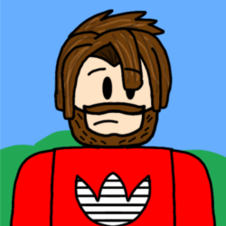
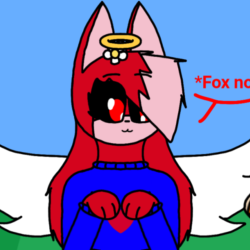

Meet Main Characters:

AndreiHe's a bit dumber than Andreea, but that's good. |

AndreeaAndrei's best friend, an Anthromorph Raspberry Fox girl with 6-pack abs, she is cute, beautiful, and smart. |